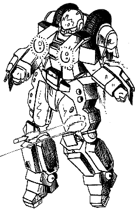

The Cyclone Veritech Ride Armor was probably the most revolutionary mecha ever constructed during the 21st century. This small motorcycle/powered armor suit gave pilots the strength of a larger Veritech or Destroid with the maneuverability neither could match. They were quickly put into mass production after their initial development, and soon became the most numerous mecha in the REF arsenal. With their ability to run on either Gasoline or Protoculture, they were ideal Invid fighters and served as the REF's front-line strike force for most of the campaign to recapture Earth from the Invid Regis. It was therefore not surprising that the Cyclones were among the first mecha to be updated and improved in the interim between the Second and Third Invid Wars.
 The second generation of Cyclones were designed to take advantage of new technology discovered during the Sentinels campaigns. For example, the new CVR-4 body armor that replaced the older CVR-3 near the end of the Second Invid War was constructed of molecular-aligned crystalline alloys, a "trick" taught to REF Metallurgists by the Spherians. These suits of armor were stronger and lighter than anything previously known to terran engineers. Another off-world technology included in the new cyclones was the powerful new micronized fusion/protoculture reactors. These reactors were based on Tirolian designs that could use water or any other hydrogen-rich liquid as fuel instead of gasoline. On the other hand, terran engineers still made their share of contributions to the new Cyclones. REF weapon engineers created a new series of modular weapon systems that could be used interchangeably with both the newer cyclones and the older models. By 2040 the initial bugs were worked out of the prototypes, and mass production of the new cyclones began in earnest. When the Icarus Reconnaissance Fleet left for Earth in 2044 it carried with it thousands of new Cyclones, ready to engage the Invid for the first time.
While developing the new combat cyclones, the REF design team also came up with some new ideas for the mecha. They realized that a man-sized mecha as powerful as the cyclone had hundreds of applications besides combat, and that the basic cyclone design could also serve as an excellent utility vehicle for the REF military. This led to the development of several types of cyclone support vehicles to help keep the REF running smoothly. The first utility cyclone was the VR-112 Samson, a high-strength low-agility model that was intended to help move supplies and munitions as well as assist combat engineers in the field. A second model, the VR-117 Firefly, was developed for rescue operations, and a third model, the VR-122 Protector, was developed for security, civil defense, and urban pacification. Other utility cyclone designs, such as underwater and space construction powersuits, are currently under development by Terran and Tirolian mecha construction companies.
The development of the second generation of cyclone designs did not replace the older VR-0XX cyclones overnight. On the contrary, so many first-gen cyclones were produced between 2032 and 2039 that it will probably be decades before they disappear from common use (if ever). Even though the Icarus mission managed to ship hundreds of second-gen cyclones to Earth during the Third Invid War, older first generation designs were still far more common among resistance fighters than the newer models throughout the war.
Any characters who know how to pilot the older cyclones will be able to pilot the second generation cyclones without any difficulty. The main control systems for all cyclones are nearly identical; all an old cyclone rider needs to do is accustom himself to the sensor layouts and control changes of the new cyclones, such as the heads-up targeting display instead of a retractable targeting sensor for missiles. There is only one Cyclone Combat and one Cyclone Combat Basic skill; anyone trained on the first-generation Cyclones gets full bonuses when piloting the second-generation Cyclones provided he has Cyclone Combat skill. Consult the Cyclone Combat Bonuses tables for listings on what bonuses characters get for each model. Optionally GMs may wish to require players to practice on second generation cyclones for 24 hours before they get full benefits when piloting the new cyclones.
The availability of the new cyclones to the characters will initially be restricted by OCC. Only the REF Cyclone Rider OCC can have his choice of cyclone. Veritech and Destroid Pilots will be assigned ONE VR-135 Forager, and Military Specialists will be assigned a VR-141 Super Saber. REF Combat Engineers may be assigned a VR-135 Forager or VR-112 Samson depending on the situation. All other occupations will be assigned either the VR-120 Ferret or a VR-135 Forager. Other cyclones can be issued only by base commanders, and the circumstances for this are rare. Of course, in the chaos of the Third Invid War characters are free to pilot whatever working Cyclone they can find...


 |
http://www.mcs.net/~deitrich/index.html deitrich@mcs.net |
Last Updated: |